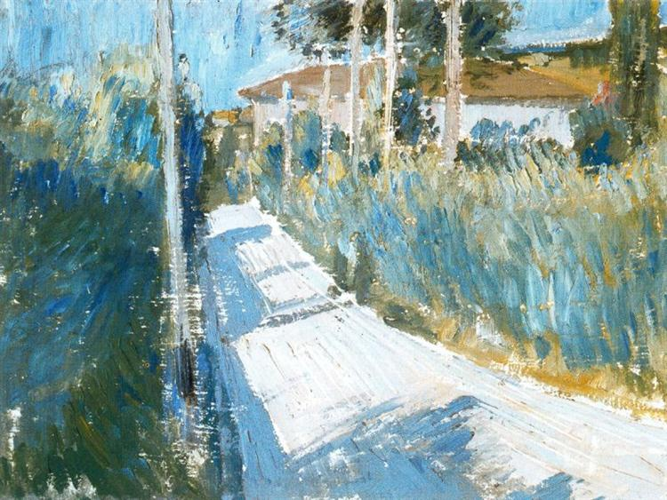

And a few things I learned growing up in a foreign land.
This is an extension of chaos that recently occupy my chain of thought. See this on substack
 Passage by Giorgio Morandi
Chaos isn’t merely an undercurrent of life; it’s a pervasive force, ever-present, often simmering just beneath the surface, ready to erupt and manifest in myriad forms. It serves not only as a backdrop in the narratives of storytellers and the musings of philosophers but also a distinct entity with the power to challenge those brave enough to embrace its unpredictability. To move abroad, to step into the unknown, is to court chaos – to acknowledge and accept the inevitability of change and the sharp tang of constant motion.
So far, I’ve lived on my own (or far away from family) for a third of my life, having made the leap to Canada at 16. This move, though seemingly late comparing to high school peers, was a turning point. It wasn’t just a change of scenery; rather, it formed a new way of seeing and being in the world for me. To articulate about the essence of moving to a new continent, let alone partake in the Western educational system, still to this day, is a task fraught with complexity that I yet to comprehend. In the years before my departure, I was enrolled at Hanoi-Amsterdam, some can considered the “crème de la crème” school within the public school system in Vietnam. Middle school was pretty much an endless march of memorisation and night classes, all leading up to the high school entrance exams. Within this rigorous routine, there was no room for complaints or questions. I wasn’t content, yet I found a way to push through, not realising the toll it was taking on my mental and physical health. Therapy, attempted much later, didn’t reveal anything new. Perhaps, my continued sessions are a search for external validation that I’ve longed for. My sense of self was intertwined with being accepted into this institution.
Three weeks before the entrance exam, or something like that. Saturday afternoon.
The sun blazed down with a ferocity that seemed almost personal, its rays relentless against the backdrop of an afternoon sky devoid of clouds. Inside, within the four walls of the room where I had spent my years growing from a child into something resembling an adult, I sat hunched over my literature review. The task was simple in theory: memorize one of three essential poems. Yet, as the sunlight fought its way through the window, casting a harsh light on the pages before me, the words seemed to dance and dodge my grasp, refusing to be tamed.
My focus was a blade, dulling with each failed attempt to carve the verses into my memory. The stillness of the room, a stark contrast to the turmoil within me, was punctuated only by the occasional creak of the house settling, as if it too strained under the weight of the heat. The air was thick, the kind of heat that makes the mind sluggish, the body weary. It was as if the entire world outside had paused, holding its breath, while I waged my silent battle within these familiar walls.
Frustration mounted within me, a tide that threatened to breach its banks. I pressed on, the words of the poem blurring before my eyes, each line a testament to my faltering resolve. My mom, ever attuned to my struggles, sensed my distress. Her suggestion to move on was gentle, her words soft, “It’s okay, darling, let’s skip this one.” But to me, they sounded like a verdict, a confirmation of my fears.
At 15, her words did not offer the comfort she intended. Instead, they unleashed the floodgates, and tears streamed down my face, a silent scream of defiance and despair.
Mom, I can't fail this exam.
I managed through sobs, the words thick in my throat. The room, with its memories and familiar comforts, felt suddenly alien, a witness to my vulnerability. In that moment, the outside heat, the oppressive stillness, and the chaos of my inner turmoil melded into a single, inescapable reality.
Even after securing my place at Hanoi-Amsterdam, my disdain for it grew. The competitive and toxic atmosphere was a far cry from what I expected. It was a battleground for status, with little regard for collaboration or personal growth. My mom, herself an educator, saw the system’s failure to nurture curiosity or critical thinking. So, when the chance to study abroad presented itself, I seized it, leaving Vietnam behind. This decision marked the start of a tumultuous journey within.
Entropy was seemingly first introduced to me in the form of the Canadian education system. The transition from the rigid, rote-learning environment to the more open, discussion-based system in Canada was jarring. The shift from a public school to a private boarding school was equally disorienting. The culture shock was palpable, and the adjustment period was fraught with challenges. I was a stranger in a strange land, a fish out of water, and the chaos of my new reality was overwhelming. I was completely baffled, destroyed, was up to no good (if you knew me you knew what I’m talking about!). But one thing that I have learnt from all the trauma accumulated throughout my experience at Amsterdam, was that, “Mama ain’t raised no quitter.” Thus, it was not-quite-okay-but-found-a-functional-way-to-survive mental model to persist throughout high school. Then the rest was history.
Seemingly, this untamed curious inner child, still clung to my being, propels me forward. It is that inner chaos that encourage me to embark on this journey of understanding.
The world is a scary place, but I’m learning to cope through it. The Übermensch crossed over the bridge and guided me through the trenches of life.

I’m not sure where I want to go from here.
Writing it down felt like opening a door I have long left shut. Each word was a step deeper into memory I have neatly folded away, not realising how much they still pulsed with life beneath the surface. Each of them felt like a sword, that carved deep into the heart, has a way of prying open the floodgates of emotions long buried. It’s one thing to carry your past quietly within you, another entirely to lay it out for the world—and yourself—to see. Suddenly, the chaos I thought I had managed whispered louder, demanding attention.
Equanimity, that state of calm balance, feels elusive, almost mythical, when you’ve danced with chaos so intimately. It’s as if I’ve befriended the storm, finding a strange comfort in its unpredictability, its relentless energy. This chaos, it doesn’t just disturb; it defines, shaping the contours of who I am, how I see the world. There’s a fear in tranquility, a suspicion of its silence. What does it mean to be at peace when you’ve grown accustomed to the noise?
Yet, this journey—my journey—isn’t about conquering the chaos but learning to live with it, to see its patterns and understand its rhythms. Maybe equanimity isn’t about taming the monster but recognizing it as a part of the self, a reflection of the complexities and contradictions that make us human. The pursuit of balance isn’t a battle but a negotiation, a conversation with the parts of ourselves we fear and love in equal measure.
Embarking on this exploration of different “entropic phenomena,” as I’ve come to call it, isn’t running away. It’s a search for understanding, a way to navigate the tumult with eyes wide open. There’s beauty in the chaos, lessons in the turbulence. And perhaps, in acknowledging this, I move closer to the equanimity I seek—not as a destination, but as a way of being, fluid and ever-evolving, amidst the storms and stillness alike.
Last but not least, I would leave you, future Aaron, with a few questions that past-Aaron has been longed to find an answer. Let us, the duality of self, partake in a Socratic dialogue, hopefully, through the process, we can find some normalcy within ourself:
Q: who are you trying to become?
A: Perhaps it is less about becoming but more about unravelling the complexities from within. There is a certain naive desire, a childlike curiosity, that propels me towards the unknown, the seas of uncertainty. In embracing this naive desire, I become a vessel of my own making, navigating the complex seas of existence. As it may be, at the moment, I’m trying to protect that child and shield him from the turbulence and chaos we call life.
Q: why can’t you move back home?
A: Consider the river and the dam. The river, a living artery, courses from its source with a purpose as clear as its waters. It meanders, shaped by the land it traverses, until it reaches the dam. Here, it lies in a deep réservoir, a body of water in waiting, destined to flow through turbines and continue its journey downstream. This cycle is perpetual: the sun draws the water skyward, and it returns as rain, nourishing the earth on its way back to the river. But the droplets that return are transformed, no longer the same entities that once rested in the dam’s embrace.
The act of leaving one’s home for foreign shores is akin to such journey - a voyage of transformation, of encountering new landscapes, of merging with unfamiliar currents. When one leaves home, they embark on a trajectory vastly different from those who stay. The familiar becomes distant, and upon return, the once-known world feels alienated. You stand apart, changed in the eyes of those who remember you once were. “Home” remains a static concept, a memory preserved in amber, while you, like the river, have been irrevocably altered by your experiences. In other words, this is often known as the theme of displacement
To return home is to face a poignant paradox: the physical space may be unchanged, the same faces may greet you, the house of your childhood may still nestle in its familiar spot, but your perception of it all has shifted. Gone the person you once was; now you have become the confluence of experiences that mold the “now” you, just as the returning water is forever changed by its journey.
Yet, despite these changes, the essence remains. The being of ‘aqua’, remains unchanged, as the inner child within us persists. It is this unchanging essence that bridges the gap between the person we have become and the place we once called home. The question, then, is not why you cannot move back home, but rather, how can one reconcile the transformed self with a place that is both intimately familiar and strangely foreign, a place etched in memory, unchanged by time yet estranged by the journey’s passage.
Q: what do you want to achieve?
A: I want to achieve a sense of peace, a balance between the chaos and the stillness. Navigating the tumult with grace, and learn to let people in. I want to look back, on what we have went through: the stillness, the moments of joy and sorrow, and know that I have lived fully, embracing the complexities and contradictions, that make me human. I want to settle down, finding a place that you truly found happiness, and found sparing partners that will help you enjoy the journey a lil bit more.
Q: what is next?
A: Changes are hard, pushes us from the comfort of our well-defined boundaries, daring us to step beyond the familiar. It whispers of growth, of the necessity to stretch our skins beyond the contours of our current selves. This leap, from one domain to another, is fraught with challenge, yet it pulses with the thrill of exploration. Yet, in this era, the drive for transformation often crashes against the shores of economic reality. Monetary values, trickles in sparingly, hardly enough to spark the fires of self-renewal.
Chaos, in its disdain for the stagnant, scoffs at the notion of safety. Safety, a gilded cage, stifles growth, ensuring that within its confines, we remain less than what we might become..
Life, then, poses its eternal riddles: Why does fear of the unknown paralyze us so? How do we stand firm in the belief that we are not solitary wanderers in this vast expanse? The warmth of unseen affections often goes unnoticed, yet in the heart’s quiet moments, we understand that our absence would echo in spaces we have touched.
The world, with its myriad terrors and wonders, unfolds before us, a realm where the overman’s gaze might fall upon us. Yet, this overman, this ideal, is but a mask, a collective facade beneath which we all seek refuge.
An unexpected call from a high school friend, a rarity, blooms like a flower in the desert. It’s a testament to the enduring nature of connections, a comforting reminder that amidst the vastness, there are anchors, points of light in the familiarity of shared pasts.
But the immensity of it all can be overwhelming. Life teems with endless possibilities, a ceaseless buzzing that fills the mind with anxiety. The world, too large, our time, too fleeting, and the soul, too eager, finds itself adrift in a sea of potential paths.
I’ve learned the art of detachment. People, with their inherent unpredictability, often disappoint. By tempering expectations, we shield ourselves from the sting of disillusionment. Camus mused on alienation, a reflection on the distance between the self and the other, a chasm often widened by unmet expectations.
What lies ahead is a question that perpetually dances on the edges of my thoughts, a melody whose tune is both haunting and invigorating. Perhaps the answer to this enigma doesn’t reside in a single destination or outcome but rather in the delicate equilibrium between the facets of my being. On one hand, there’s the driven Aaron, fueled by curiosity and a relentless pursuit of excellence. This Aaron is a force, a whirlwind of ambition and determination, always pushing forward, always reaching for the next peak to conquer.
On the other hand, there exists another Aaron, one who carries the weight of past hurts and seeks not just to advance but to heal. This Aaron understands that growth isn’t solely about personal achievements but also about nurturing and repairing the web of relationships that envelop him. This version of myself is attuned to the quiet, often overlooked work of mending bridges and soothing wounds, both his own and those of the people around him.
The path forward, then, might not be a straight line but a winding road that requires navigating the complexities of these dual identities. It’s about recognising that the quest for achievement and the journey toward healing are not mutually exclusive but are, in fact, complementary forces. By embracing both the drive to excel and the need to heal, one can forge a way forward that honours the entirety of your aspirations.
In this balance, You might find not just the next step but a deeper understanding of what it means to truly live. It’s about making peace with the multifaceted nature of my desires and recognising that every facet, whether driven by ambition or the need for connection, plays a crucial role in defining who I am and who I aspire to be. The road ahead is one of integration, where the driven and the broken parts of me walk hand in hand, each lending strength to the other as I continue to explore the vast landscape of possibilities that life offers.